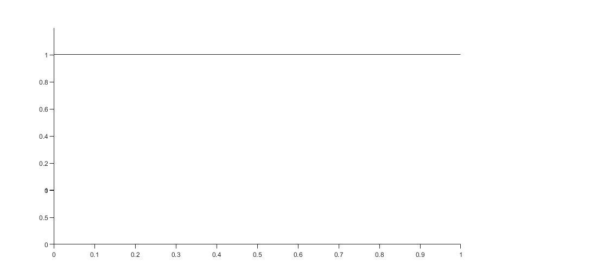
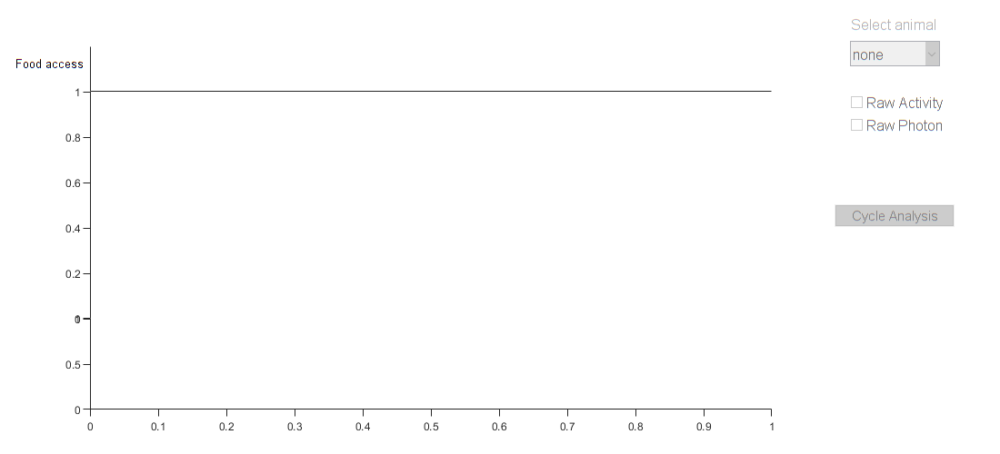

Contents
- Initialize
- Data Defaults
- Default options
- Default display
- file menu
- Setup menu
- Multiple Animals menu
- Other Buttons
- Functions
- Setup the Import Options
- Clear temporary variables
- Initialize Plot
- Plot Food
- Plot Shadows
- Plot Photon
- Plot Activity
- Sel Animals
- Sel Groups
- Select metric
- Now the numerical ones
- Start plotting
- Plot Shadows
- Food Plot
- Photon
- Activity
- Update we are in a group
- For Cycle Analysis
- Update we are in a group
- file menu
- Axes
- Background plots
- Food Plot
- Photon
- Activity
function p_Osiris_v1()
% Osiris version 1 23/12/20 % Please find in this repository the source code for the application % Osiris. This application is used for visualization of the data acquired % with the RT-Biolumicorder (Saini,et al. 2013). It allows the display of % the photon and activity dynamics of the animals as well as the food % access and light exposure. In addition, it allows doing basic group % analysis and saving the figures for latter publication. % % Reference % % % Other references % C. Saini, A. Liani, T. Curie, et al. (2013) Real-time recording of % circadian liver gene expression in freely moving mice reveals the % phase-setting behavior of hepatocyte clocks., Genes & Development. % 27, 1526–1536. % % % Copyright (c) 2020, Alejandro Osorio % alejandro.osorioforero@unil.ch % All rights reserved. % % see also f_LoadTextFile, f_SaveFigure, f_LoadDatabase, % f_LoadMultipleFiles, f_AddToDAM, f_PlotThisAnimal, f_ImportSingle, % f_PlotFile, f_SetMovAvgWindow, f_GroupPlot, f_SaveDB, % f_SelectAnimalsForMean, f_SelectGroupMean, f_SingleAnimal, % f_SaveFigure, f_CycleAnalysis
Initialize
close all clear all clc
Data Defaults
st_DMA =struct([]); % Data of Multiple Animals
st_DMA.m_Time = [];
st_DMA.m_Photon = [];
st_DMA.m_Activity = [];
st_DMA.m_Food = [];
st_DMA.m_Light = [];
st_DMA.m_AnimalNames = {};
st_DMA.m_AnimalGroups = {};
st_Main.st_Groups.v_cPhoton = {};
st_Main.st_Groups.v_cActivity = {};
st_Main.st_Groups.v_ZT0s = {};
st_Main.str_DatabaseName = 'None';
st_Main.str_TitleFigure = ['Osiris, ','Database: ',st_Main.str_DatabaseName];
st_Main.b_OpenDB = 0;
st_Main.b_InGroup = 0;
st_Main.b_ContinueProcess = 1;
st_Main.CurrentAnimal = 1;
st_Main.v_cSelAnimals = {};
st_Main.v_cSelectedGroup = {};
Default options
st_Main.v_Options.MovingAvg1 = 300;
Default display
st_Main.v_Display.v_LightColor = [250 240 180]/255;
st_Main.v_Display.v_SubjDayColor = [.95 .95 .95];
st_Main.v_Display.v_SubjNightColor = [.9 .9 .9];
st_Main.v_ColorsForGroups = {'b','k','r','c','m','g','y'};% To change the colors
set(0,'defaultAxesFontSize',11)
st_Main.st_MainFig = figure('Name',st_Main.str_TitleFigure,...
'ToolBar','none',...
'numbertitle','off',...
'Menubar','none',...
'Position',[100 100 1100 500],'Color','w','Resize','off');
st_Main.BackgroundAxSubjDay = axes(st_Main.st_MainFig,'Units','pixels','position',[100 50 750 400],...
'box','off','TickDir','out','Color','none','xtick',[],'ytick',[]);
st_Main.BackgroundAxSubjNight = axes(st_Main.st_MainFig,'Units','pixels','position',[100 50 750 400],...
'box','off','TickDir','out','Color','none','xtick',[],'ytick',[]);
st_Main.BackgroundAxLight = axes(st_Main.st_MainFig,'Units','pixels','position',[100 50 750 400],...
'box','off','TickDir','out','Color','none','xtick',[],'ytick',[]);
st_Main.st_FoodAxes = axes(st_Main.st_MainFig,'Units','pixels','position',[100 400 750 50],...
'box','off','TickDir','out','Color','w','xtick',[],'ytick',[]);
st_Main.st_AxesAct = axes(st_Main.st_MainFig,'Units','pixels','position',[100 50 750 100],...
'box','off','TickDir','out','Color','none','FontSize',9);
st_Main.st_AxesPhoton = axes(st_Main.st_MainFig,'Units','pixels','position',[100 150 750 250],...
'box','off','TickDir','out','Color','none','xtick',[],'XColor','w','FontSize',9);
 file menu
st_Main.fileMenu = uimenu(st_Main.st_MainFig, 'Text', 'File'); st_Main.fileMenu_Load = uimenu(st_Main.fileMenu, 'Text', 'Load file', 'Enable', 'on'); st_Main.fileMenu_Load.Callback = @f_LoadTextFile; st_Main.fileMenu_LoadMultiple = uimenu(st_Main.fileMenu, 'Text', 'Load multiple', 'Enable', 'on'); st_Main.fileMenu_LoadMultiple.Callback = @f_LoadMultipleFiles; st_Main.fileMenu_LoadDatabase = uimenu(st_Main.fileMenu, 'Text', 'Load/Create database', 'Enable', 'on'); st_Main.fileMenu_LoadDatabase.Callback = @f_LoadDatabase; st_Main.fileMenu_SaveDB = uimenu(st_Main.fileMenu, 'Text', 'Save database', 'Enable', 'off'); st_Main.fileMenu_SaveDB.Callback = @f_SaveDB; st_Main.fileMenu_SaveFig = uimenu(st_Main.fileMenu, 'Text', 'Save figure', 'Enable', 'off'); st_Main.fileMenu_SaveFig.Callback = @f_SaveFigure;
Setup menu
st_Main.ToolsMenu = uimenu(st_Main.st_MainFig, 'Text', 'Setup'); st_Main.ToolsMenu_MovAvgWindow = uimenu(st_Main.ToolsMenu, 'Text', 'Set average Window',... 'Enable', 'off'); st_Main.ToolsMenu_MovAvgWindow.Callback = @f_SetMovAvgWindow;
Multiple Animals menu
st_Main.GroupsMenu = uimenu(st_Main.st_MainFig, 'Text', 'Groups'); st_Main.ToolsMenu_SingleAnimal = uimenu(st_Main.GroupsMenu, 'Text', 'Single Animal',... 'Enable', 'off','Checked','on'); st_Main.ToolsMenu_SingleAnimal.Callback = @f_SingleAnimal; st_Main.ToolsMenu_GroupAnalysis = uimenu(st_Main.GroupsMenu, 'Text', 'Group Analysis',... 'Enable', 'off','Checked','off'); st_Main.ToolsMenu_GroupAnalysis.Callback = @f_GroupPlot;
Other Buttons
st_Main.str_FoodText = uicontrol(st_Main.st_MainFig,... 'Style','text',... 'units','normalized',... 'Position',[0.015 .84 .07 .035],... 'String','Food access',... 'BackgroundColor','w',... 'FontSize',10,... 'HorizontalAlignment','Left'); st_Main.st_PlotActivityDotsCheck = uicontrol(st_Main.st_MainFig,... 'Style','checkbox',... 'units','normalized',... 'Position',[.85 .75 .15 .05],... 'String','Raw Activity',... 'Value', 0,... 'BackgroundColor','w',... 'FontSize',12,... 'Enable','off',... 'Callback',{@f_PlotFile}); st_Main.st_PlotPhotonDotsCheck = uicontrol(st_Main.st_MainFig,... 'Style','checkbox',... 'units','normalized',... 'Position',[.85 .7 .15 .05],... 'String','Raw Photon',... 'Value', 0,... 'BackgroundColor','w',... 'FontSize',12,... 'Enable','off',... 'Callback',{@f_PlotFile}); st_Main.st_ShowThisPupUp = uicontrol(st_Main.st_MainFig,... 'Style','popupmenu',... 'units','normalized',... 'Position',[.85 .86 .09 .05],... 'String','none',... 'Value',1,... 'BackgroundColor','w',... 'FontSize',12,... 'Enable','off',... 'Callback',{@f_PlotThisAnimal}); st_Main.st_ShowPupUpText = uicontrol(st_Main.st_MainFig,... 'Style','text',... 'units','normalized',... 'Position',[.85 .915 .1 .05],... 'String','Select animal',... 'BackgroundColor','w',... 'FontSize',12,... 'HorizontalAlignment','Left',... 'Enable','off'); st_Main.GroupAnalysis = uicontrol(st_Main.st_MainFig,... 'units','normalized',... 'Position',[.835 .5 .12 .05],... 'String','Cycle Analysis',... 'BackgroundColor','w',... 'FontSize',11,... 'HorizontalAlignment','Left',... 'Enable','off',... 'Callback',{@f_CycleAnalysis});
Functions
%-------------------------------------------------------------------------% function f_LoadDatabase(~,~) % f_LoadDatabase % This function loads an already saved database % See also f_LoadTextFile, f_LoadDatabase, p_Osiris_v1. % Load Database str_answer1 = questdlg('Load database', ... 'Would you like to open a database or create a new one?', ... 'Open','Create new','Create new'); % Handle response switch str_answer1 case 'Open' [str_DatabaseName, str_DatabasePath] = uigetfile('*.mat','Select the file to analyze'); if str_DatabaseName == 0 return; end st_Main.str_DatabaseName = str_DatabaseName; st_Main.str_DatabasePath = str_DatabasePath; st_DMA = load(fullfile(str_DatabasePath,str_DatabaseName)); st_DMA = st_DMA.st_DMA; if ~isempty(st_DMA) st_Main.st_ShowThisPupUp.String = st_DMA.m_AnimalNames; st_Main.st_ShowThisPupUp.Value = 1; f_PlotThisAnimal() st_Main.st_PlotPhotonDotsCheck.Enable='on'; st_Main.st_PlotActivityDotsCheck.Enable='on'; st_Main.ToolsMenu_MovAvgWindow.Enable='on'; st_Main.fileMenu_save.Enable='on'; st_Main.st_ShowThisPupUp.Enable='on'; st_Main.st_ShowPupUpText.Enable='on'; end case 'Create new' prompt = {'Name of the database:'}; dlgtitle = 'Input'; definput = {'Test_1'}; str_answer2 = inputdlg(prompt,dlgtitle,1,definput); if isempty(str_answer2) return; end st_Main.str_DatabaseName = str_answer2{1}; st_Main.str_DatabasePath = pwd; end st_Main.b_OpenDB = 1; st_Main.fileMenu_SaveDB.Enable = 'on'; st_Main.fileMenu_SaveFig.Enable = 'on'; st_Main.str_TitleFigure = ['Osiris, ','Database: ',st_Main.str_DatabaseName]; st_Main.st_MainFig.Name = st_Main.str_TitleFigure; if length(st_DMA.m_AnimalNames)>1 st_Main.ToolsMenu_GroupAnalysis.Enable='on'; end end %-------------------------------------------------------------------------% function f_LoadTextFile(~,~) % This function is used to load a txt file saved with the % RT-Biolumicorder. IMPORTANT. Make sure there is NOT any empty row % at the end of the file. % % See also f_LoadTextFile, f_LoadDatabase, p_Osiris_v1. % Load File [str_FileName, str_Path] = uigetfile('*.txt','Select the file to analyze'); if str_FileName == 0 return; end st_Main.str_FileName = str_FileName; st_Main.str_Path = str_Path; st_CurrFile = f_ImportSingle(str_Path,str_FileName); st_Main.st_CurrFile = st_CurrFile; prompt = {['Name of the Animal in file: "',str_FileName,'"'],'LightsOn','Group in database'}; dlgtitle = 'Animal Information'; definput = {'Animal1','8','Ctrl'}; str_cAnimalInfo = inputdlg(prompt,dlgtitle,1,definput); st_Main.st_CurrFile.str_AnimalName = str_cAnimalInfo{1}; st_Main.st_CurrFile.str_Group = str_cAnimalInfo{3}; if isnan(str_cAnimalInfo{2}) str_cAnimalInfo{2}='8'; st_Warnong = warndlg('Please give a number. Set to 8.','Starting hour'); end % Here I modify the time so ZT0 is the same for all animals. In the % end we do not care about the time but about the ZT. switch str_cAnimalInfo{2} case '6' st_Main.st_CurrFile.v_Time = st_Main.st_CurrFile.v_Time + hours(2); case '7' st_Main.st_CurrFile.v_Time = st_Main.st_CurrFile.v_Time + hours(1); case '9' st_Main.st_CurrFile.v_Time = st_Main.st_CurrFile.v_Time - hours(1); case '10' st_Main.st_CurrFile.v_Time = st_Main.st_CurrFile.v_Time - hours(2); case '11' st_Main.st_CurrFile.v_Time = st_Main.st_CurrFile.v_Time - hours(3); case '12' st_Main.st_CurrFile.v_Time = st_Main.st_CurrFile.v_Time - hours(4); end st_Main.st_PlotPhotonDotsCheck.Enable='on'; st_Main.st_PlotActivityDotsCheck.Enable='on'; st_Main.ToolsMenu_MovAvgWindow.Enable='on'; st_Main.fileMenu_save.Enable='on'; st_Main.fileMenu_SaveFig.Enable = 'on'; f_AddToDAM(); st_Main.st_ShowThisPupUp.Enable='on'; st_Main.st_ShowPupUpText.Enable='on'; st_Main.st_ShowThisPupUp.String = st_DMA.m_AnimalNames; st_Main.st_ShowThisPupUp.Value = 1; f_PlotThisAnimal() f_PlotFile(); if length(st_DMA.m_AnimalNames)>1 st_Main.ToolsMenu_GroupAnalysis.Enable='on'; end end %-------------------------------------------------------------------------% function f_LoadMultipleFiles(~,~) % f_LoadMultipleFiles % Loads multiple txt files saved by the RT-Biolumicorder. Again, it % applies the same rule as f_LoadTextFile. % % See also f_LoadTextFile, f_LoadDatabase, p_Osiris_v1. if ~st_Main.b_OpenDB f_LoadDatabase() end % Load File [str_FileName, str_Path] = uigetfile('*.txt','Select the file to analyze','MultiSelect', 'on'); if ~iscell(str_FileName) if ischar(str_FileName) st_Warnong = warndlg('Select more than one file','Select file'); return; elseif str_FileName == 0 return; end end st_DlgWait = waitbar(10,'Loading files','Please wait',0); st_DlgWait.Children.Title.Interpreter = 'none'; for idxFile = 1:length(str_FileName) str_CurrAnimal = str_FileName{idxFile}; waitbar(idxFile/length(str_FileName),st_DlgWait,['File: ',str_CurrAnimal]); st_Main.str_FileName = str_CurrAnimal; st_Main.str_Path = str_Path; st_CurrFile = f_ImportSingle(str_Path,str_CurrAnimal); st_Main.st_CurrFile = st_CurrFile; prompt = {['Name of the Animal in file: "',str_CurrAnimal,'"'],'LightsOn','Group in database'}; dlgtitle = 'Animal Information'; definput = {'Animal1','8','Ctrl'}; str_cAnimalInfo = inputdlg(prompt,dlgtitle,1,definput); st_Main.st_CurrFile.str_AnimalName = str_cAnimalInfo{1}; st_Main.st_CurrFile.str_Group = str_cAnimalInfo{3}; if isnan(str_cAnimalInfo{2}) str_cAnimalInfo{2}='8'; st_Warnong = warndlg('Please give a number. Set to 8.','Starting hour'); end % Here I modify the time so ZT0 is the same for all animals. In the % end we do not care about the time but about the ZT. switch str_cAnimalInfo{2} case '6' st_Main.st_CurrFile.v_Time = st_Main.st_CurrFile.v_Time + hours(2); case '7' st_Main.st_CurrFile.v_Time = st_Main.st_CurrFile.v_Time + hours(1); case '9' st_Main.st_CurrFile.v_Time = st_Main.st_CurrFile.v_Time - hours(1); case '10' st_Main.st_CurrFile.v_Time = st_Main.st_CurrFile.v_Time - hours(2); case '11' st_Main.st_CurrFile.v_Time = st_Main.st_CurrFile.v_Time - hours(3); case '12' st_Main.st_CurrFile.v_Time = st_Main.st_CurrFile.v_Time - hours(4); end f_AddToDAM(); st_Main.CurrentAnimal = idxFile; end delete(st_DlgWait) st_Main.st_PlotPhotonDotsCheck.Enable = 'on'; st_Main.st_PlotActivityDotsCheck.Enable = 'on'; st_Main.ToolsMenu_MovAvgWindow.Enable = 'on'; st_Main.fileMenu_save.Enable = 'on'; st_Main.st_ShowThisPupUp.Enable = 'on'; st_Main.st_ShowPupUpText.Enable = 'on'; st_Main.fileMenu_SaveFig.Enable = 'on'; f_PlotThisAnimal(); f_PlotFile(); if length(st_DMA.m_AnimalNames)>1 st_Main.ToolsMenu_GroupAnalysis.Enable = 'on'; end end %-------------------------------------------------------------------------% function f_AddToDAM() % f_AddToDAM % Here we create a time from the begining of the fist to the end % of the last hour of the recording % Lets say the recording starts at 16:16:06 % then it adds 16 minutes (0 to 15) % and it finishes at 19:04:25, then it adds 55 from 4 to 59 % Then, we aline all the values to the minute of start % Also, here we include the new animal in the database. % % See also f_LoadTextFile, f_LoadDatabase, p_Osiris_v1. s_StartingMin = minute(st_Main.st_CurrFile.v_Time(1)); s_StartingHour = hour(st_Main.st_CurrFile.v_Time(1)); s_EndMin = minute(st_Main.st_CurrFile.v_Time(end)); s_EndHour = hour(st_Main.st_CurrFile.v_Time(end)); s_TimeBefore = s_StartingHour*60+s_StartingMin; s_TimeAfter = (23-s_EndHour)*60+(59-s_EndMin); s_Totalminutes = s_TimeBefore+length(st_Main.st_CurrFile.v_Time)+s_TimeAfter; v_Temp_Time=datetime('0:0:0')+minutes(0:s_Totalminutes-1); v_Temp_Time.Format='HH:mm:ss'; v_Temp_Time=v_Temp_Time'; v_Temp_Time(s_TimeBefore+1:s_TimeBefore+length(st_Main.st_CurrFile.v_Time)) = st_Main.st_CurrFile.v_Time; v_Temp_Time = datenum(v_Temp_Time); m_Time=st_DMA.m_Time; if length(v_Temp_Time)>length(m_Time) && ~isempty(m_Time) m_Time(:,length(m_Time)+1:length(v_Temp_Time))=repmat(v_Temp_Time(length(m_Time)+1:length(v_Temp_Time))',size(m_Time,1),1); end if size(v_Temp_Time,1)>size(v_Temp_Time,2) m_Time(end+1,1:length(v_Temp_Time)) = v_Temp_Time'; else m_Time(end+1,1:length(v_Temp_Time)) = v_Temp_Time; end st_DMA.m_Time=m_Time; v_Temp_Photon = nan(1,s_Totalminutes); v_Temp_Photon(s_TimeBefore+1:s_TimeBefore+length(st_Main.st_CurrFile.v_Photon)) = st_Main.st_CurrFile.v_Photon; m_Photon=st_DMA.m_Photon; if isempty(m_Photon) if size(v_Temp_Photon,1)>size(v_Temp_Photon,2) m_Photon = v_Temp_Photon'; else m_Photon = v_Temp_Photon; end else if length(v_Temp_Photon)>length(m_Photon) m_Photon(:,length(m_Photon)+1:length(v_Temp_Photon))=nan; end m_Photon(end+1,:)=nan; if size(v_Temp_Photon,1)>size(v_Temp_Photon,2) m_Photon(end,1:length(v_Temp_Photon)) = v_Temp_Photon'; else m_Photon(end,1:length(v_Temp_Photon)) = v_Temp_Photon; end end st_DMA.m_Photon=m_Photon; v_Temp_Activity = nan(1,s_Totalminutes); v_Temp_Activity(s_TimeBefore+1:s_TimeBefore+length(st_Main.st_CurrFile.v_Activity)) = st_Main.st_CurrFile.v_Activity; m_Activity = st_DMA.m_Activity; if isempty(m_Activity) if size(v_Temp_Activity,1)>size(v_Temp_Activity,2) m_Activity = v_Temp_Activity'; else m_Activity = v_Temp_Activity; end else if length(v_Temp_Activity)>length(m_Activity)&& ~isempty(m_Activity) m_Activity(:,length(m_Activity)+1:length(v_Temp_Activity))=nan; end m_Activity(end+1,:)=nan; if size(v_Temp_Activity,1)>size(v_Temp_Activity,2) m_Activity(end,1:length(v_Temp_Activity)) = v_Temp_Activity'; else m_Activity(end,1:length(v_Temp_Activity)) = v_Temp_Activity; end end st_DMA.m_Activity = m_Activity; v_Temp_Food = nan(1,s_Totalminutes); v_Temp_Food(s_TimeBefore+1:s_TimeBefore+length(st_Main.st_CurrFile.v_Food)) = st_Main.st_CurrFile.v_Food; m_Food = st_DMA.m_Food; if isempty(m_Food) if size(v_Temp_Food,1)>size(v_Temp_Food,2) m_Food = v_Temp_Food'; else m_Food = v_Temp_Food; end else if length(v_Temp_Food)>length(m_Food)&& ~isempty(m_Food) m_Food(:,length(m_Food)+1:length(v_Temp_Food))=nan; end m_Food(end+1,:)=nan; if size(v_Temp_Food,1)>size(v_Temp_Food,2) m_Food(end,1:length(v_Temp_Food)) = v_Temp_Food'; else m_Food(end,1:length(v_Temp_Food)) = v_Temp_Food; end end st_DMA.m_Food = m_Food; v_Temp_Light = nan(1,s_Totalminutes); v_Temp_Light(s_TimeBefore+1:s_TimeBefore+length(st_Main.st_CurrFile.v_Light)) = st_Main.st_CurrFile.v_Light; m_Light = st_DMA.m_Light; if isempty(m_Light) if size(v_Temp_Light,1)>size(v_Temp_Light,2) m_Light = v_Temp_Light'; else m_Light = v_Temp_Light; end else if length(v_Temp_Light)>length(m_Light)&& ~isempty(m_Light) m_Light(:,length(m_Light)+1:length(v_Temp_Light))=nan; end m_Light(end+1,:)=nan; if size(v_Temp_Light,1)>size(v_Temp_Light,2) m_Light(end,1:length(v_Temp_Light)) = v_Temp_Light'; else m_Light(end,1:length(v_Temp_Light)) = v_Temp_Light; end end st_DMA.m_Light = m_Light; st_DMA.m_AnimalNames{end+1} = st_Main.st_CurrFile.str_AnimalName; st_DMA.m_AnimalGroups{end+1} = st_Main.st_CurrFile.str_Group; st_Main.st_ShowThisPupUp.String = st_DMA.m_AnimalNames; end %-------------------------------------------------------------------------% function f_PlotThisAnimal(~,~) % f_PlotThisAnimal % This function loads the information from the database to the % temporal variables used to create the plots. % % See also f_LoadTextFile, f_LoadDatabase, p_Osiris_v1. st_Main.st_CurrFile.str_AnimalName = st_DMA.m_AnimalNames{st_Main.st_ShowThisPupUp.Value}; st_Main.st_CurrFile.str_Group = st_DMA.m_AnimalGroups{st_Main.st_ShowThisPupUp.Value}; s_Ini = find(~isnan(st_DMA.m_Photon(st_Main.st_ShowThisPupUp.Value,:))==1,1,'first'); s_End = find(~isnan(st_DMA.m_Photon(st_Main.st_ShowThisPupUp.Value,:))==1,1,'last'); v_Time = st_DMA.m_Time(st_Main.st_ShowThisPupUp.Value,s_Ini:s_End); v_Photon = st_DMA.m_Photon(st_Main.st_ShowThisPupUp.Value,s_Ini:s_End); v_Activity = st_DMA.m_Activity(st_Main.st_ShowThisPupUp.Value,s_Ini:s_End); v_Food = st_DMA.m_Food(st_Main.st_ShowThisPupUp.Value,s_Ini:s_End); v_Light = st_DMA.m_Light(st_Main.st_ShowThisPupUp.Value,s_Ini:s_End); st_Main.st_CurrFile.v_Time = v_Time; st_Main.st_CurrFile.v_Photon = v_Photon; st_Main.st_CurrFile.v_Activity = v_Activity; st_Main.st_CurrFile.v_Food = v_Food; st_Main.st_CurrFile.v_Light = v_Light; f_PlotFile(); end %-------------------------------------------------------------------------% function st_CurrFile = f_ImportSingle(str_Path,str_FileName)
% f_ImportSingle % This function is used to import the txt files. REMEMBER to always % make sure there is NOT EMPTY rows at the end of the file. %
Setup the Import Options
opts = delimitedTextImportOptions("NumVariables", 22); % Specify range and delimiter opts.DataLines = [3, Inf]; opts.Delimiter = "\t"; % Specify column names and types opts.VariableNames = ["Step", "VarName2", "VarName3", "Time", "VarName5", "VarName6", "Photon", "VarName8", "VarName9", "Activity", "VarName11", "VarName12", "Food", "VarName14", "VarName15", "Light", "VarName17", "VarName18", "VarName19", "VarName20", "VarName21", "VarName22"]; opts.VariableTypes = ["double", "string", "string", "datetime", "string", "string", "double", "string", "string", "double", "string", "string", "double", "string", "string", "double", "string", "string", "string", "string", "string", "string"]; opts = setvaropts(opts, 4, "InputFormat", "HH:mm:ss"); opts = setvaropts(opts, [2, 3, 5, 6, 8, 9, 11, 12, 14, 15, 17, 18, 19, 20, 21, 22], "WhitespaceRule", "preserve"); opts = setvaropts(opts, [2, 3, 5, 6, 8, 9, 11, 12, 14, 15, 17, 18, 19, 20, 21, 22], "EmptyFieldRule", "auto"); opts.ExtraColumnsRule = "ignore"; opts.EmptyLineRule = "read"; % Import the data T_FileTable = readtable(fullfile(str_Path,str_FileName), opts); st_CurrFile.v_Time = T_FileTable.Time; st_CurrFile.v_Photon = T_FileTable.Photon; st_CurrFile.v_Activity = T_FileTable.Activity; st_CurrFile.v_Food = T_FileTable.Food; st_CurrFile.v_Light = T_FileTable.Light;
Clear temporary variables
clear opts
end %-------------------------------------------------------------------------% function f_PlotFile(~,~)
% f_PlotFile % In this function we plot the data of the current animal saved in % the temporal variables. %
Initialize Plot
v_Light = st_Main.st_CurrFile.v_Light;
v_Food = st_Main.st_CurrFile.v_Food;
v_TimeValue = st_Main.st_CurrFile.v_Time;
v_TimeValue = datetime(v_TimeValue,'ConvertFrom','datenum');
v_TimeValue.Format = 'HH:mm:ss';
v_TimeValue.Second = 0;
v_Activity = st_Main.st_CurrFile.v_Activity;
v_Activity(v_Activity==0) = nan;
v_Photon = st_Main.st_CurrFile.v_Photon;
v_Photon(v_Photon==0) = nan;
v_Photon(v_Photon<1000) = nan;
v_Photon(v_Photon>5*nanstd(v_Photon)) = nan;
v_ActivityAvg = movmean(v_Activity,st_Main.v_Options.MovingAvg1,'omitnan');% The moving average Activity
v_PhotonAvg = movmean(v_Photon,st_Main.v_Options.MovingAvg1,'omitnan');% The moving average Photon
v_ActivityAvg(v_ActivityAvg==0)=nan;
v_PhotonAvg(v_PhotonAvg==0)=nan;
v_Time = hour(v_TimeValue);
v_ZT0s = find(diff(v_Time==8)==1);
v_ZT12s = find(diff(v_Time==20)==1);
v_LocNanAtBegining = find(isnan(v_Photon(1:v_ZT0s(2))));
v_PhotonAvg(v_LocNanAtBegining)=nan;
v_Time = linspace(0,length(v_TimeValue)/60,length(v_TimeValue));
Plot Food
cla(st_Main.st_FoodAxes,'reset'); v_Food(v_Food==0)=nan; st_LineFood = line(st_Main.st_FoodAxes,v_Time,v_Food,'LineWidth',2,'Color','k'); set(st_Main.st_FoodAxes,'box','off','TickDir','out','Color','w',... 'xtick',[],'ytick',[],'Ylim',[0,2]);
Plot Shadows
v_Tick = [v_ZT0s,v_ZT12s];
v_strTick = [zeros(1,length(v_ZT0s)),ones(1,length(v_ZT12s))*12];
[v_Tick,I] = sort(v_Tick);
v_Tick = v_Time(v_Tick);
v_strTick=v_strTick(I);
v_Night = zeros(size(v_Light));
for idx = 1:length(v_ZT0s)
v_Night(v_ZT12s(idx):v_ZT0s(idx)) = 1;
end
v_Day = zeros(size(v_Light));
v_Day = ~v_Night;
H1 = area(st_Main.BackgroundAxSubjDay,v_Time(1:10:end),v_Day(1:10:end),'FaceColor',st_Main.v_Display.v_SubjDayColor,'EdgeColor','none');
H2 = area(st_Main.BackgroundAxSubjNight,v_Time(1:10:end),v_Night(1:10:end),'FaceColor',st_Main.v_Display.v_SubjNightColor,'EdgeColor','none');
H3 = area(st_Main.BackgroundAxLight,v_Time(1:10:end),v_Light(1:10:end),'FaceColor',st_Main.v_Display.v_LightColor,'EdgeColor','none');
set(st_Main.BackgroundAxSubjDay,'box','off','TickDir','out',...
'xtick',[],'ytick',[],'Color','none');
set(st_Main.BackgroundAxSubjNight,'box','off','TickDir','out',...
'xtick',[],'ytick',[],'Color','none');
set(st_Main.BackgroundAxLight,'box','off','TickDir','out',...
'xtick',[],'ytick',[],'Color','none');
Plot Photon
cla(st_Main.st_AxesPhoton,'reset') st_Main.st_PlotPhotonDotsCheck.Enable = 'on'; plot(st_Main.st_AxesPhoton,v_Time,v_PhotonAvg,'LineWidth',2) if st_Main.st_PlotPhotonDotsCheck.Value hold on scatter(st_Main.st_AxesPhoton,v_Time,st_Main.st_CurrFile.v_Photon,'.') end ylabel(st_Main.st_AxesPhoton,'Photon') set(st_Main.st_AxesPhoton,'box','off','TickDir','out',... 'xtick',[],'xcolor','w','Color','none','FontSize',9)
Plot Activity
cla(st_Main.st_AxesAct,'reset') st_Main.st_PlotActivityDotsCheck.Enable = 'on'; stem(st_Main.st_AxesAct,v_Time,v_ActivityAvg,'LineWidth',1.5,'Marker','none','Color',[180,0,0]/255) if st_Main.st_PlotActivityDotsCheck.Value hold on scatter(st_Main.st_AxesAct,v_Time,st_Main.st_CurrFile.v_Activity,'.') end ylabel(st_Main.st_AxesAct,'Activity') hold off set(st_Main.st_AxesAct,'box','off','TickDir','out',... 'xtick',v_Tick,'xticklabels',v_strTick,... 'Color','none','FontSize',9) % str_secStart=v_Time{1}(end-1:end); % IndexZT0 = find(contains(v_Time,str_Hr0)); % IndexZT12 = find(contains(v_Time,str_Hr12)); % v_Tick = [IndexZT0;IndexZT12]; % v_strTick = [repmat(0,length(IndexZT0),1);repmat(12,length(IndexZT12),1)]; % % [v_Tick,I] = sort(v_Tick); % v_strTick=v_strTick(I); % % xlabel('ZT') % hold off;
end %-------------------------------------------------------------------------% function f_SetMovAvgWindow(~,~) % f_SetMovAvgWindow % This function is called whenever we select to modify the moving % average window for the visualization of the data. This size of % the window is also used to perform the group analysis. % prompt = {'Moving average window size (min)'}; dlgtitle = 'Moving average window'; definput = {'300'}; opts.Interpreter = 'tex'; str_answer_AvgWindow = inputdlg(prompt,dlgtitle,[1 40],definput,opts); str_answer_AvgWindow = str2double(str_answer_AvgWindow); if str_answer_AvgWindow < 60 str_answer_AvgWindow =60; st_Warnong = warndlg('Minimum 60. It was set to 60','Minimum reached'); elseif isnan(str_answer_AvgWindow) str_answer_AvgWindow =300; st_Warnong = warndlg('Please put a number >60. It was set to 300','Not a number'); end st_Main.v_Options.MovingAvg1 = str_answer_AvgWindow; if st_Main.b_InGroup == 1 f_GroupPlot(); else f_PlotFile(); end end %-------------------------------------------------------------------------% function f_GroupPlot(~,~)
% f_GroupPlot % This function plots the mean and dispersion data for multiple % animals. The user is able to select both the animals and groups % included for the analysis. % % see also f_GroupPlot, f_SelectAnimalsForMean, f_SelectGroupMean
Sel Animals
v_dim=get(0,'screensize'); s_iniX = round(v_dim(3)*.35); s_iniY = round(v_dim(4)*.2); s_valW = round(v_dim(3)*.3); s_valH = round(v_dim(4)*.6); st_Main.st_figSel = uifigure('Position',[s_iniX s_iniY s_valW s_valH]); f_SelectAnimalsForMean(); uiwait(st_Main.st_figSel); if st_Main.b_ContinueProcess==0 return; end
Sel Groups
s_iniX = round(v_dim(3)*.4);
s_iniY = round(v_dim(4)*.4);
s_valW = round(v_dim(3)*.25);
s_valH = round(v_dim(4)*.3);
st_Main.st_figSel = uifigure('Position',[s_iniX s_iniY s_valW s_valH]);
f_SelectGroupMean();
waitfor(st_Main.st_figSel);
if st_Main.b_ContinueProcess==0
return;
end
for idx = 1 : length(st_Main.v_cSelAnimals)
v_AnimalsToSelect(idx) = find(strcmp(st_DMA.m_AnimalNames,st_Main.v_cSelAnimals{idx}));
end
v_AnimalsToSelect = sort(v_AnimalsToSelect);
Select metric
list = {'SEM','STD','CI95'};
[idx,~] = listdlg('PromptString',{'Select a dispersion metric'},...
'SelectionMode','single','ListString',list);
tf = list{idx};
if isempty(tf)
return;
end
v_TimeValue = st_DMA.m_Time(1,:);
v_TimeValue = datetime(v_TimeValue,'ConvertFrom','datenum');
v_TimeValue.Format = 'HH:mm:ss';
v_TimeValue.Second = 0;
v_Time = hour(v_TimeValue);
v_ZT0s = find(diff(v_Time==8)==1);
v_ZT12s = find(diff(v_Time==20)==1);
v_NameAnimalsInG ={};
for idx = 1 : length(st_Main.v_cSelectedGroup)
v_ThisGroup = find(strcmp(st_DMA.m_AnimalGroups,st_Main.v_cSelectedGroup{idx}));
s_SelThese = intersect(v_AnimalsToSelect,v_ThisGroup);
v_NameAnimalsInG{idx} = st_DMA.m_AnimalNames(s_SelThese);
% First the booleans (Light and Food)
m_Temp_Light = st_DMA.m_Light(s_SelThese,:);
HereIsNan = sum(isnan(m_Temp_Light))==length(s_SelThese);
m_Temp_Light = nansum(m_Temp_Light);
m_Temp_Light(HereIsNan) = nan;
m_Light(idx,:) = m_Temp_Light;
m_Temp_Food = st_DMA.m_Food(s_SelThese,:);
m_Temp_Food = nansum(m_Temp_Food);
m_Food(idx,:) = m_Temp_Food;
Now the numerical ones
Mean Activity
m_Activity = st_DMA.m_Activity(s_SelThese,:);
m_Activity(m_Activity==0) = nan;
m_Activity = movmean(m_Activity',st_Main.v_Options.MovingAvg1,'omitnan')';% The moving average Activity
if size(m_Activity,1)<1
f = msgbox('Not enough animals per group', 'Error','error');
return;
end
m_ActSEM = f_SEM_STD_CI95(m_Activity,tf);
m_ActMean = nanmean(m_Activity);
v_cActivity{idx} = m_Activity;
m_Mean_Act(idx,:) = m_ActMean;
m_SEM_Act(idx,:) = m_ActSEM;
% Mean Photon
m_Photon = st_DMA.m_Photon(s_SelThese,:);
m_Photon(m_Photon==0) = nan;
v_LocNanAtBegining=[];
for idxV=1:size(m_Photon)
v_Photon= m_Photon(idxV,:);
v_Photon(v_Photon==0) = nan;
v_Photon(v_Photon<1000) = nan;
v_Photon(v_Photon>6*nanstd(v_Photon)) = nan;
v_LocNanAtBegining{idxV} = find(m_Temp_Light(1:v_ZT0s(3))>0);
m_Photon(idxV,:)=v_Photon;
end
m_Photon = movmean(m_Photon',st_Main.v_Options.MovingAvg1,'omitnan')';% The moving average Activity
for idxV=1:size(m_Photon)
v_Photon= m_Photon(idxV,:);
v_Photon(v_LocNanAtBegining{idxV})= nan;
m_Photon(idxV,:)=v_Photon;
end
if size(m_Photon,1)<1
f = msgbox('Not enough animals per group', 'Error','error');
return;
end
m_PhotSEM = f_SEM_STD_CI95(m_Photon,tf);
m_PhotMean = nanmean(m_Photon);
v_cPhoton{idx} = m_Photon;
m_Mean_Phot(idx,:)= m_PhotMean;
m_SEM_Phot(idx,:) = m_PhotSEM;
end
Start plotting
cla(st_Main.BackgroundAxSubjDay,'reset'); cla(st_Main.BackgroundAxSubjNight,'reset'); cla(st_Main.BackgroundAxLight,'reset'); cla(st_Main.st_FoodAxes,'reset'); cla(st_Main.st_AxesAct,'reset'); cla(st_Main.st_AxesPhoton,'reset'); st_Main.st_FoodAxes.Color='none'; st_Main.st_AxesPhoton.Color='none'; st_Main.st_AxesAct.Color='none';
Plot Shadows
v_Time = linspace(0,length(v_TimeValue)/60,length(v_TimeValue));
v_Tick = [v_ZT0s,v_ZT12s];
v_strTick = [zeros(1,length(v_ZT0s)),ones(1,length(v_ZT12s))*12];
[v_Tick,I] = sort(v_Tick);
v_Tick = v_Time(v_Tick);
v_strTick=v_strTick(I);
if size(m_Light,1)>1
HereIsNan = sum(isnan(m_Light))==length(st_Main.v_cSelectedGroup);
m_Temp_Light = nansum(m_Light);
m_Temp_Light(HereIsNan) = nan;
end
v_Light = m_Temp_Light;
v_Light(v_Light>1) = 1;
if v_ZT0s(1)<v_ZT12s(1)
v_Day = zeros(size(v_Light));
for idx = 1:length(v_ZT0s)
v_Day(v_ZT0s(idx):v_ZT12s(idx)) = 1;
end
v_Night = zeros(size(v_Light));
v_Night = ~v_Day;
else
v_Night = zeros(size(v_Light));
for idx = 1:length(v_ZT0s)
v_Night(v_ZT12s(idx):v_ZT0s(idx)) = 1;
end
v_Day = zeros(size(v_Light));
v_Day = ~v_Night;
end
H1 = area(st_Main.BackgroundAxSubjDay,v_Time(1:10:end),v_Day(1:10:end),'FaceColor',st_Main.v_Display.v_SubjDayColor,'EdgeColor','none');
H2 = area(st_Main.BackgroundAxSubjNight,v_Time(1:10:end),v_Night(1:10:end),'FaceColor',st_Main.v_Display.v_SubjNightColor,'EdgeColor','none');
H3 = area(st_Main.BackgroundAxLight,v_Time(1:10:end),v_Light(1:10:end),'FaceColor',st_Main.v_Display.v_LightColor,'EdgeColor','none');
set(st_Main.BackgroundAxSubjDay,'box','off','TickDir','out',...
'xtick',[],'ytick',[],'Color','none');
set(st_Main.BackgroundAxSubjNight,'box','off','TickDir','out',...
'xtick',[],'ytick',[],'Color','none');
set(st_Main.BackgroundAxLight,'box','off','TickDir','out',...
'xtick',[],'ytick',[],'Color','none');
Food Plot
axes(st_Main.st_FoodAxes)
for idxPlot = 1 : length(st_Main.v_cSelectedGroup);
v_Food = m_Food(idxPlot,:);
v_Food(v_Food>1) = 1;
v_Food(v_Food==0)=nan;
st_LineFood(idxPlot) = line(st_Main.st_FoodAxes,v_Time(1:2:end),v_Food(1:2:end)*((idxPlot-1)+0.5),'LineWidth',2,'Color',st_Main.v_ColorsForGroups{idxPlot});
end
% legend(st_LineFood,st_Main.v_cSelectedGroup,'box','off')
set(st_Main.st_FoodAxes,'box','off','TickDir','out','Color','w',...
'xtick',[],'ytick',[],'Ylim',[0,length(st_Main.v_cSelectedGroup)+1]);
Photon
axes(st_Main.st_AxesPhoton)
h_Lines=[];
for idxPlot = 1 : length(st_Main.v_cSelectedGroup);
v_Var = m_Mean_Phot(idxPlot,:);
v_Var(v_Var==0)=nan;
TempLine = shadedErrorBar(v_Time(1:2:end),v_Var(1:2:end),m_SEM_Phot(idxPlot,1:2:end),'lineProps', {'Color',st_Main.v_ColorsForGroups{idxPlot}});
h_Lines(idxPlot) = TempLine.mainLine;
hold on
end
legend(h_Lines,st_Main.v_cSelectedGroup,'box','off')
set(st_Main.st_AxesPhoton,'box','off','TickDir','out',...
'Color','none',...
'xtick',[],'FontSize',9)
ylabel(st_Main.st_AxesPhoton,'Photon')
Activity
axes(st_Main.st_AxesAct)
h_Lines=[];
for idxPlot = 1 : length(st_Main.v_cSelectedGroup);
v_Var = m_Mean_Act(idxPlot,:);
v_Var(v_Var==0) = nan;
TempLine = shadedErrorBar(v_Time(1:2:end),v_Var(1:2:end),m_SEM_Act(idxPlot,1:2:end),'lineProps', {'Color',st_Main.v_ColorsForGroups{idxPlot}});
h_Lines(idxPlot) = TempLine.mainLine;
hold on
end
% legend(h_Lines,st_Main.v_cSelectedGroup,'box','off')
set(st_Main.st_AxesAct,'box','off','TickDir','out','FontSize',9,...
'Color','none','xtick',v_Tick,'xticklabel',v_strTick);
ylabel(st_Main.st_AxesAct,'Activity')
Update we are in a group
st_Main.st_PlotPhotonDotsCheck.Enable='off'; st_Main.st_PlotActivityDotsCheck.Enable='off'; st_Main.st_ShowThisPupUp.Enable='off'; st_Main.st_ShowPupUpText.Enable='off'; st_Main.ToolsMenu_GroupAnalysis.Checked = 'on'; st_Main.ToolsMenu_SingleAnimal.Enable='on'; st_Main.ToolsMenu_SingleAnimal.Checked = 'off'; st_Main.fileMenu_SaveFig.Enable = 'on'; st_Main.GroupAnalysis.Enable = 'on'; st_Main.b_InGroup = 1;
For Cycle Analysis
st_Main.st_Groups.v_GroupNames = st_Main.v_cSelectedGroup;
st_Main.st_Groups.v_ZT0s = v_ZT0s;
st_Main.st_Groups.v_cPhoton = v_cPhoton;
st_Main.st_Groups.v_cActivity = v_cActivity;
st_Main.st_Groups.m_Food = m_Food;
st_Main.st_Groups.m_Light = m_Light;
st_Main.st_Groups.DesvMetric = tf;
st_Main.st_Groups.v_NameAnimalsInG = v_NameAnimalsInG;
end %-------------------------------------------------------------------------% function f_SaveDB(~,~) % f_SaveDB % This function saves the database as a .mat file. % % st_MsgDlg = msgbox('Saving','Saving database...'); save(fullfile(st_Main.str_DatabasePath,st_Main.str_DatabaseName),'st_DMA'); delete(st_MsgDlg); end %-------------------------------------------------------------------------% function f_SelectAnimalsForMean(~,~) % f_SelectAnimalsForMean % This function creates the dialog box for the selection of animals % to be included in the group plot and Analysis. % % see also f_GroupPlot, f_SelectAnimalsForMean, f_SelectGroupMean st_Main.b_ContinueProcess = 0; v_PosFig = get(st_Main.st_figSel,'Position'); s_iniXLBox = round(v_PosFig(3)*.1); s_iniXTxtBox = round(v_PosFig(3)*.6); s_iniYTxtandList = round(v_PosFig(4)*.15); s_valWTxtandList = round(v_PosFig(3)*.3); s_valHTxtandList = round(v_PosFig(4)*.75); % Create List Box labelLBox = uilabel(st_Main.st_figSel,... 'Position',[s_iniXLBox s_valHTxtandList+s_iniYTxtandList+v_PosFig(4)*.025 round(v_PosFig(3)*.3) 15],... 'Text','Select Animals:'); lbox = uilistbox(st_Main.st_figSel,... 'Position',[s_iniXLBox s_iniYTxtandList s_valWTxtandList s_valHTxtandList],... 'Multiselect','on',... 'Items',st_DMA.m_AnimalNames,... 'ValueChangedFcn',@selectionChanged); st_btnOK = uibutton(st_Main.st_figSel,... 'text','Ok','ButtonPushedFcn',@SelectTheseAnimals,... 'Position',[round(v_PosFig(3)*.45) round(v_PosFig(4)*.05) round(v_PosFig(3)*.1) round(v_PosFig(4)*.05)]); % Create Text Area labelText = uilabel(st_Main.st_figSel,... 'Position',[s_iniXTxtBox s_valHTxtandList+s_iniYTxtandList+v_PosFig(4)*.025 round(v_PosFig(3)*.3) 15],... 'Text','Animals to include:'); st_txt = uitextarea(st_Main.st_figSel,... 'Position',[s_iniXTxtBox s_iniYTxtandList s_valWTxtandList s_valHTxtandList]); selectionChanged(lbox,[]) % ValueChangedFcn callback function selectionChanged(src,event) st_txt.Value = src.Value; end function SelectTheseAnimals(~,~) st_Main.v_cSelAnimals = st_txt.Value; close(st_Main.st_figSel); st_Main.b_ContinueProcess = 1; end end %-------------------------------------------------------------------------% function f_SelectGroupMean(~,~) % f_SelectGroupMean % This function creates the dialog box for the selection of groups % to be included in the group plot and Analysis. % % see also f_GroupPlot, f_SelectAnimalsForMean, f_SelectGroupMean st_Main.b_ContinueProcess = 0; v_PosFig = get(st_Main.st_figSel,'Position'); s_iniXLBox = round(v_PosFig(3)*.1); s_iniXTxtBox = round(v_PosFig(3)*.6); s_iniYTxtandList = round(v_PosFig(4)*.2); s_valWTxtandList = round(v_PosFig(3)*.3); s_valHTxtandList = round(v_PosFig(4)*.7); % Create List Box labelLBox = uilabel(st_Main.st_figSel,... 'Position',[s_iniXLBox s_valHTxtandList+s_iniYTxtandList+v_PosFig(4)*.015 round(v_PosFig(3)*.3) 15],... 'Text','Select Animals:'); lbox = uilistbox(st_Main.st_figSel,... 'Position',[s_iniXLBox s_iniYTxtandList s_valWTxtandList s_valHTxtandList],... 'Multiselect','on',... 'Items',unique(st_DMA.m_AnimalGroups),... 'ValueChangedFcn',@selectionChanged); st_btnOK = uibutton(st_Main.st_figSel,... 'text','Ok','ButtonPushedFcn',@SelectThese,... 'Position',[round(v_PosFig(3)*.45) round(v_PosFig(4)*.05) round(v_PosFig(3)*.1) round(v_PosFig(4)*.1)]); % Create Text Area labelText = uilabel(st_Main.st_figSel,... 'Position',[s_iniXTxtBox s_valHTxtandList+s_iniYTxtandList+v_PosFig(4)*.015 round(v_PosFig(3)*.3) 15],... 'Text','Animals to include:'); st_txt = uitextarea(st_Main.st_figSel,... 'Position',[s_iniXTxtBox s_iniYTxtandList s_valWTxtandList s_valHTxtandList]); selectionChanged(lbox,[]) % ValueChangedFcn callback function selectionChanged(src,event) st_txt.Value = src.Value; end function SelectThese(~,~) st_Main.v_cSelectedGroup = st_txt.Value; close(st_Main.st_figSel); st_Main.b_ContinueProcess = 1; end end %-------------------------------------------------------------------------% function f_SingleAnimal(~,~)
% f_SingleAnimal % This function is use to set up the user interface for single % animal visualization. % % see also f_PlotThisAnimal.
Update we are in a group
st_Main.st_PlotPhotonDotsCheck.Enable='on'; st_Main.st_PlotActivityDotsCheck.Enable='on'; st_Main.st_ShowThisPupUp.Enable='on'; st_Main.st_ShowPupUpText.Enable='on'; st_Main.ToolsMenu_GroupAnalysis.Checked = 'off'; st_Main.ToolsMenu_SingleAnimal.Enable='off'; st_Main.ToolsMenu_SingleAnimal.Checked = 'on'; st_Main.fileMenu_SaveFig.Enable = 'on'; st_Main.b_InGroup = 0; f_PlotFile();
end %-------------------------------------------------------------------------% function f_SaveFigure(~,~) % f_SaveFigure % This function is used to save the current plot in the figure % in both tiff and eps formats. % % see also f_SaveDB. st_Main.st_PlotPhotonDotsCheck.Visible='off'; st_Main.st_PlotActivityDotsCheck.Visible='off'; st_Main.st_ShowThisPupUp.Visible='off'; st_Main.st_ShowPupUpText.Visible='off'; st_Main.GroupAnalysis.Visible='off'; str_selpath = uigetdir('.','Where do you want to save the figures?'); prompt = {'Name of the figure:'}; dlgtitle = 'Name figure'; definput = {'Name'}; str_cAnimalInfo = inputdlg(prompt,dlgtitle,1,definput); str_Name = str_cAnimalInfo{1}; saveas(st_Main.st_MainFig,fullfile(str_selpath,str_Name), 'tif') set(gcf,'Renderer','painters') saveas(st_Main.st_MainFig,fullfile(str_selpath,str_Name), 'epsc') set(gcf,'Renderer','OpenGL') st_Main.st_PlotPhotonDotsCheck.Visible='on'; st_Main.st_PlotActivityDotsCheck.Visible='on'; st_Main.st_ShowThisPupUp.Visible='on'; st_Main.st_ShowPupUpText.Visible='on'; st_Main.GroupAnalysis.Visible='on'; end %-------------------------------------------------------------------------% function f_CycleAnalysis(~,~)
% f_CycleAnalysis % This function performs the cycle anaylsis from an specific day % (given by the user) to the end of the recording across all groups % of animals. % It allows to save both the figure as tiff and eps formats as well % as the quantitative analysis of the cycles; i.e. the amplitude of % the cycles, the phase of the peak and the rate of change between % peak and trough as csv format. % % see also f_GroupPlot. st_Cycle.st_FigureCycles =figure('Name','Cycle Analysis',... 'ToolBar','none',... 'numbertitle','off',... 'Menubar','none',... 'Position',[250 100 400 500],... 'Color','w',... 'Resize','off');
file menu
st_Cycle.fileMenu = uimenu(st_Cycle.st_FigureCycles, 'Text', 'File'); st_Cycle.fileMenu_Load = uimenu(st_Cycle.fileMenu, 'Text', 'Save metrics', 'Enable', 'on'); st_Cycle.fileMenu_Load.Callback = @f_SaveCyclesInfo; st_Cycle.fileMenu_LoadMultiple = uimenu(st_Cycle.fileMenu, 'Text', 'Save Figure', 'Enable', 'on'); st_Cycle.fileMenu_LoadMultiple.Callback = @f_SaveCyclesFigure;
Axes
st_Cycle.BackgroundAxSubjDay = axes(st_Cycle.st_FigureCycles,'position',[.15 .15 .7 .65],... 'box','off','TickDir','out','Color','none','xtick',[],'ytick',[]); st_Cycle.BackgroundAxSubjNight = axes(st_Cycle.st_FigureCycles,'position',[.15 .15 .7 .65],... 'box','off','TickDir','out','Color','none','xtick',[],'ytick',[]); st_Cycle.BackgroundAxLight = axes(st_Cycle.st_FigureCycles,'position',[.15 .15 .7 .65],... 'box','off','TickDir','out','Color','none','xtick',[],'ytick',[]); st_Cycle.st_FoodAxes = axes(st_Cycle.st_FigureCycles,'position',[.15 .35+.45 .7 .1],... 'box','off','TickDir','out','Color','w','xtick',[],'ytick',[]); st_Cycle.st_AxesAct = axes(st_Cycle.st_FigureCycles,'position',[.15 .15 .7 .2],... 'box','off','TickDir','out','Color','none','FontSize',9); st_Cycle.st_AxesPhoton = axes(st_Cycle.st_FigureCycles,'position',[.15 .35 .7 .45],... 'box','off','TickDir','out','Color','none','xtick',[],'XColor','w','FontSize',9); prompt = {'Start at which day?'}; dlgtitle = 'Day of experiment'; definput = {'3'}; str_answer = inputdlg(prompt,dlgtitle,1,definput); s_Answer = round(str2double(str_answer)); if isempty(str_answer)||isnan(s_Answer) close(st_Cycle.st_FigureCycles); delete st_Cycle return; end v_ZT0s = st_Main.st_Groups.v_ZT0s; v_ZT0s(1:s_Answer-1) = []; v_cActivity = st_Main.st_Groups.v_cActivity; v_cPhoton = st_Main.st_Groups.v_cPhoton; m_Food = st_Main.st_Groups.m_Food; m_Light = st_Main.st_Groups.m_Light; v_GroupNames = st_Main.st_Groups.v_GroupNames; str_Metric = st_Main.st_Groups.DesvMetric; v_AnimalsInG = st_Main.st_Groups.v_NameAnimalsInG; s_points = v_ZT0s(2)-v_ZT0s(1); v_Time = linspace(0,24,s_points); m_Mean_Act = []; m_Mean_Phot = []; m_Desv_Act = []; m_Desv_Phot = []; m_GFood = []; m_GLight = []; for idxG = 1: length(v_cActivity) nDays = length(v_ZT0s)-1; m_Activity = v_cActivity{idxG}; m_Activity = m_Activity(:,v_ZT0s(1):v_ZT0s(end)); if mod(length(m_Activity),nDays)==0 m_Photon = v_cPhoton{idxG}; m_Photon = m_Photon(:,v_ZT0s(1):v_ZT0s(end)); v_Food = m_Food(idxG,v_ZT0s(1):v_ZT0s(end)); v_Light = m_Light(idxG,v_ZT0s(1):v_ZT0s(end)); else m_Activity = v_cActivity{idxG}; m_Activity = m_Activity(:,v_ZT0s(1):v_ZT0s(end)-1); m_Photon = v_cPhoton{idxG}; m_Photon = m_Photon(:,v_ZT0s(1):v_ZT0s(end)-1); v_Food = m_Food(idxG,v_ZT0s(1):v_ZT0s(end)-1); v_Light = m_Light(idxG,v_ZT0s(1):v_ZT0s(end)-1); end v_Food(v_Food>0) = 1; v_Light(v_Light>0) = 1; m_Activity = reshape(m_Activity,[size(m_Activity,1),s_points,nDays]); m_Activity = nanmean(m_Activity,3); m_Photon = reshape(m_Photon,[size(m_Photon,1),s_points,nDays]); m_Photon = nanmean(m_Photon,3); v_Food = reshape(v_Food,[s_points,nDays]); v_Food = nanmean(v_Food,2)'; v_Light = reshape(v_Light,[s_points,nDays]); v_Light = nansum(v_Light,2)'; m_Mean_Act(idxG,:) = nanmean(m_Activity); m_GActivity{idxG} = m_Activity; m_Mean_Phot(idxG,:) = nanmean(m_Photon); m_GPhoton{idxG} = m_Photon; m_Desv_Act(idxG,:) = f_SEM_STD_CI95(m_Activity,str_Metric); m_Desv_Phot(idxG,:) = f_SEM_STD_CI95(m_Photon,str_Metric); v_Food(v_Food<1)=nan; m_GFood(idxG,:) = v_Food; m_GLight(idxG,:) = v_Light; end
Background plots
v_Day = zeros(1,s_points);
v_Day(1:round(end/2))=1;
v_Night = ~v_Day;
v_Light = sum(m_GLight);
v_Light(v_Light>0) = 1;
v_Light(v_Light<1) = nan;
st_Cycle.H1 = area(st_Cycle.BackgroundAxSubjDay,linspace(0,24,s_points),v_Day,'FaceColor',st_Main.v_Display.v_SubjDayColor,'EdgeColor','none');
st_Cycle.H2 = area(st_Cycle.BackgroundAxSubjNight,linspace(0,24,s_points),v_Night,'FaceColor',st_Main.v_Display.v_SubjNightColor,'EdgeColor','none');
st_Cycle.H3 = area(st_Cycle.BackgroundAxLight,linspace(0,24,s_points),v_Light,'FaceColor',st_Main.v_Display.v_LightColor,'EdgeColor','none');
set(st_Cycle.BackgroundAxSubjDay,'box','off','TickDir','out',...
'xtick',[],'ytick',[],'Color','none','ylim',[0,1],'xlim',[0,24]);
set(st_Cycle.BackgroundAxSubjNight,'box','off','TickDir','out',...
'xtick',[],'ytick',[],'Color','none','ylim',[0,1],'xlim',[0,24]);
set(st_Cycle.BackgroundAxLight,'box','off','TickDir','out',...
'xtick',[],'ytick',[],'Color','none','ylim',[0,1],'xlim',[0,24]);
Food Plot
axes(st_Cycle.st_FoodAxes)
for idxPlot = 1 : length(v_GroupNames);
v_Food = m_GFood(idxPlot,:);
v_Food(v_Food>1) = 1;
v_Food(v_Food==0)=nan;
st_LineFood(idxPlot) = line(st_Cycle.st_FoodAxes,v_Time(1:2:end),v_Food(1:2:end)*((idxPlot-1)+0.5),'LineWidth',2,'Color',st_Main.v_ColorsForGroups{idxPlot});
end
set(st_Cycle.st_FoodAxes,'box','off','TickDir','out','Color','w',...
'xtick',[],'ytick',[],'Ylim',[0,length(st_Main.v_cSelectedGroup)+1],'xlim',[0,24]);
Photon
axes(st_Cycle.st_AxesPhoton)
h_Lines=[];
for idxPlot = 1 : length(v_GroupNames);
v_Var = m_Mean_Phot(idxPlot,:);
v_Var(v_Var==0)=nan;
TempLine = shadedErrorBar(v_Time(1:2:end),v_Var(1:2:end),m_Desv_Phot(idxPlot,1:2:end),'lineProps', {'Color',st_Main.v_ColorsForGroups{idxPlot}});
h_Lines(idxPlot) = TempLine.mainLine;
hold on
end
legend(h_Lines,v_GroupNames,'box','off')
set(st_Cycle.st_AxesPhoton,'box','off','TickDir','out',...
'Color','none',...
'xtick',[],'FontSize',9,'xlim',[0,24])
ylabel(st_Cycle.st_AxesPhoton,'Photon')
Activity
axes(st_Cycle.st_AxesAct)
h_Lines=[];
for idxPlot = 1 : length(v_GroupNames);
v_Var = m_Mean_Act(idxPlot,:);
v_Var(v_Var==0) = nan;
TempLine = shadedErrorBar(v_Time(1:2:end),v_Var(1:2:end),m_Desv_Act(idxPlot,1:2:end),'lineProps', {'Color',st_Main.v_ColorsForGroups{idxPlot}});
h_Lines(idxPlot) = TempLine.mainLine;
hold on
end
set(st_Cycle.st_AxesAct,'box','off','TickDir','out','FontSize',9,...
'Color','none','xlim',[0,24],...
'xtick',[0 12 24],'xticklabel',{'ZT0','ZT12','ZT0'});
ylabel(st_Cycle.st_AxesAct,'Activity')
%-----------------------------------------------------------------%
function f_SaveCyclesFigure(~,~)
str_selpath = uigetdir('.','Where do you want to save the figures?');
prompt = {'Name of the figure:'};
dlgtitle = 'Name figure';
definput = {'Cycles'};
str_cAnimalInfo = inputdlg(prompt,dlgtitle,1,definput);
str_Name = str_cAnimalInfo{1};
saveas(st_Cycle.st_FigureCycles,fullfile(str_selpath,str_Name), 'tif')
set(gcf,'Renderer','painters')
saveas(st_Cycle.st_FigureCycles,fullfile(str_selpath,str_Name), 'epsc')
set(gcf,'Renderer','OpenGL')
end
%-----------------------------------------------------------------%
function f_SaveCyclesInfo(~,~)
% Get Information
v_Phases_Act = [];
v_Amplitudes_Act = [];
v_Slopes_Act = [];
v_Phases_Photon = [];
v_Amplitudes_Photon = [];
v_Slopes_Photon = [];
v_ListAnimals = {};
v_ListGroups = {};
for idxG = 1:length(v_GroupNames)
m_Act = m_GActivity{idxG};
m_Phot = m_GPhoton{idxG};
s_NAnimalsInG = size(m_Act,1);
% Activity
[v_MaxG,v_PosMax] = max(m_Act');
[v_MinG,v_PosMin] = min(m_Act');
v_Slopes_Act(end+1:end+s_NAnimalsInG,1) = (v_Time(v_PosMin)-v_Time(v_PosMax))./(v_MinG-v_MaxG);
v_Phases_Act(end+1:end+s_NAnimalsInG,1) = v_Time(v_PosMax);
v_Amplitudes_Act(end+1:end+s_NAnimalsInG,1) = v_MaxG-v_MinG;
% dTime = mean(diff(v_Time)); % Find Mean Differece In ‘x’ Values
% dy = gradient(m_Act,dTime); % Calculate Slope Of Data
% Photons
[v_MaxG,v_PosMax] = max(m_Phot');
[v_MinG,v_PosMin] = min(m_Phot');
v_Slopes_Photon(end+1:end+s_NAnimalsInG,1) = (v_Time(v_PosMin)-v_Time(v_PosMax))./(v_MinG-v_MaxG);
v_Phases_Photon(end+1:end+s_NAnimalsInG,1) = v_Time(v_PosMax);
v_Amplitudes_Photon(end+1:end+s_NAnimalsInG,1) = v_MaxG-v_MinG;
v_ListAnimals(end+1:end+s_NAnimalsInG,1) = v_AnimalsInG{idxG}';
v_ListGroups(end+1:end+s_NAnimalsInG,1) = cellstr(repmat(v_GroupNames{idxG},s_NAnimalsInG,1));
end
str_selpath = uigetdir('.','Where do you want to save the information?');
prompt = {'Name of the file:'};
dlgtitle = 'Filename';
definput = {'Cycles'};
str_cAnimalInfo = inputdlg(prompt,dlgtitle,1,definput);
str_Name = str_cAnimalInfo{1};
v_titles1 = {'Animal','Group','Act_Amplitude','Act_Phase',' Act_Slope','Phot_Amplitude','Phot_Phase','Phot_Slope'};
T = table(v_ListAnimals,v_ListGroups,v_Amplitudes_Act,v_Phases_Act,v_Slopes_Act,v_Amplitudes_Photon,v_Phases_Photon,v_Slopes_Photon,'VariableNames',v_titles1);
writetable(T,[str_selpath,'\',str_Name,'.csv'])
end
%-----------------------------------------------------------------%
end %-------------------------------------------------------------------------%
end %%%%%%%%%%%%%%%%%%%%%%%%%%%%%%%%%%%%%%%%%%%%%%%%%%%%%%%%%%%%%%%%%%%%%%%%%%% function v_Out = f_SEM_STD_CI95(M,str_Type) %f_SEM Get a vector containing the standard error of the mean of a matrix. % v_Out = f_SEM(k) is the returns in the vector v_Out that contains the SEM of a % matrix M (n x m) of n observations of the vector m. % % str_Type = write 'SEM'(default); 'STD'; 'CI95'. Depending on the desired metric. % % See also ShadedErrorBar % % Alejandro Osorio-Forero 2018 if nargin<1 str_Type='SEM'; end switch str_Type case 'SEM' v_Out = nanstd(M)/sqrt(size(M,1)); case 'STD' v_Out = nanstd(M); case 'CI95' v_Out = 1.960*nanstd(M)/sqrt(size(M,1)); end end